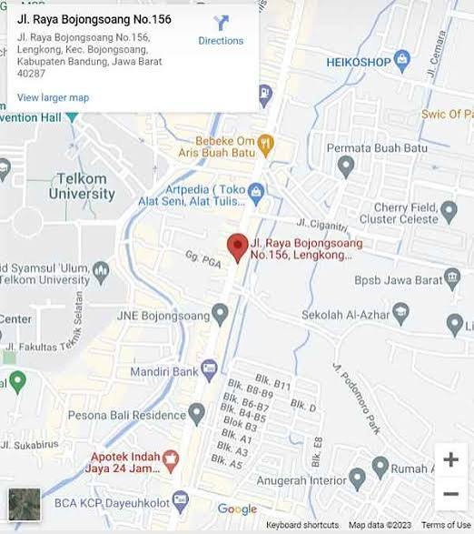

Pelayanan Kesehatan Terpercaya

Informasi untuk memudahkan pengunjung menghubungi kami
Jl. Contoh Alamat No. 10, Kota Mataram, Nusa Tenggara Barat.
(0370) 000000
Hubungi bagian informasi rumah sakit.
Senin - Minggu
Pelayanan disesuaikan dengan
jenis layanan rumah sakit.
Untuk memperoleh informasi lebih lanjut mengenai layanan dan fasilitas rumah sakit, pengunjung dapat menghubungi bagian informasi.
Kami berkomitmen memberikan informasi yang jelas dan membantu kebutuhan masyarakat terkait pelayanan kesehatan.